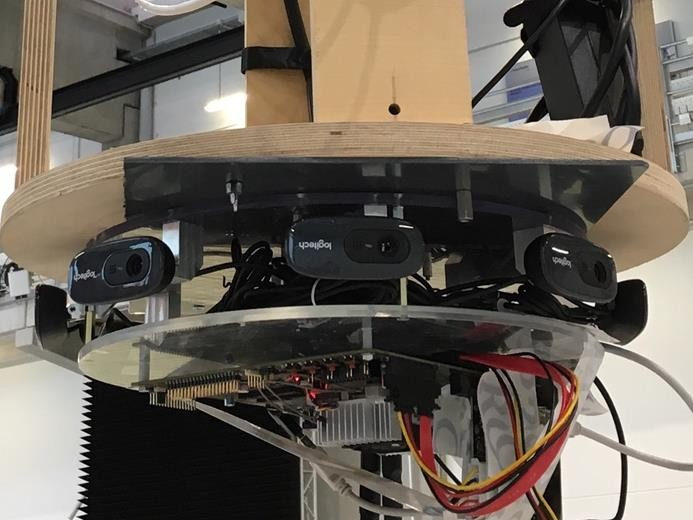
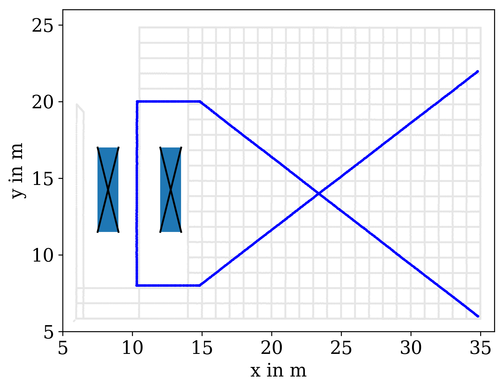
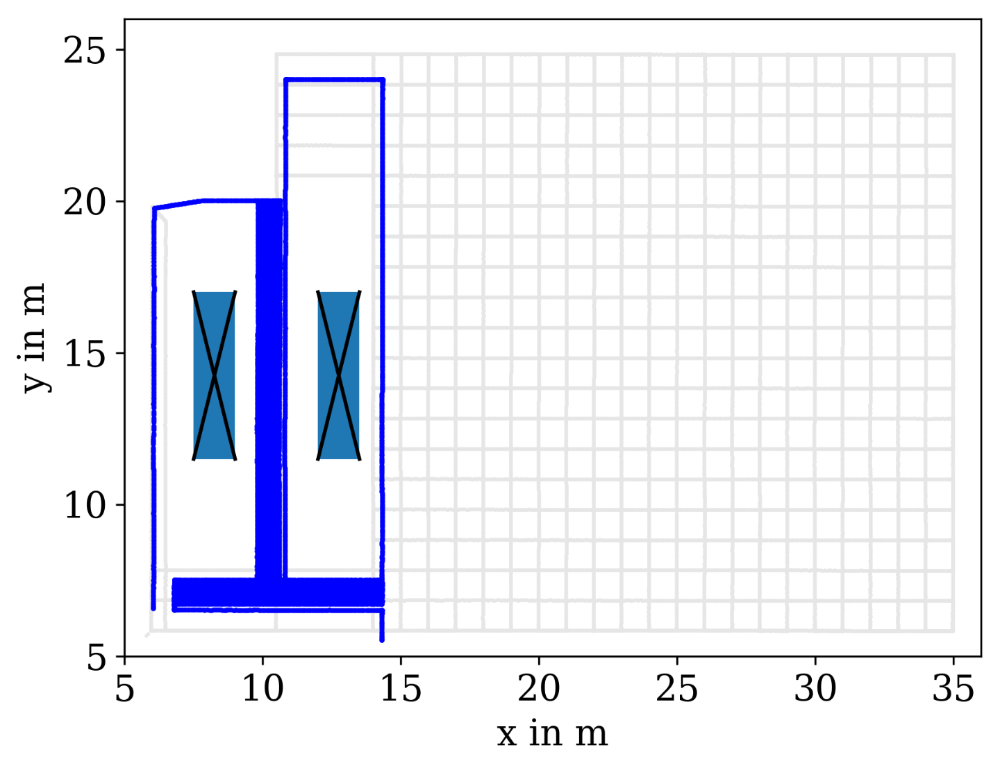
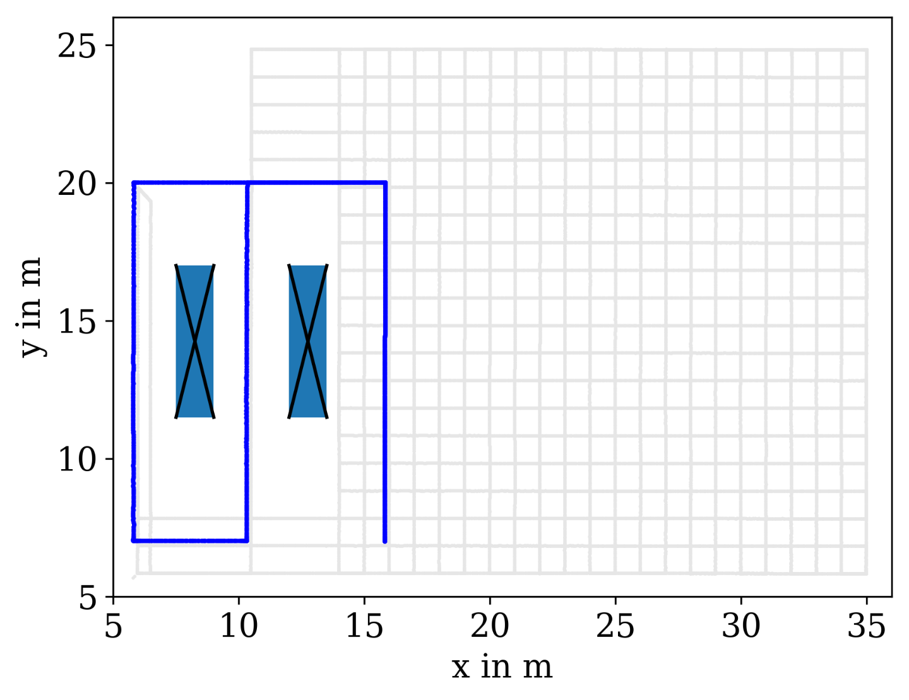
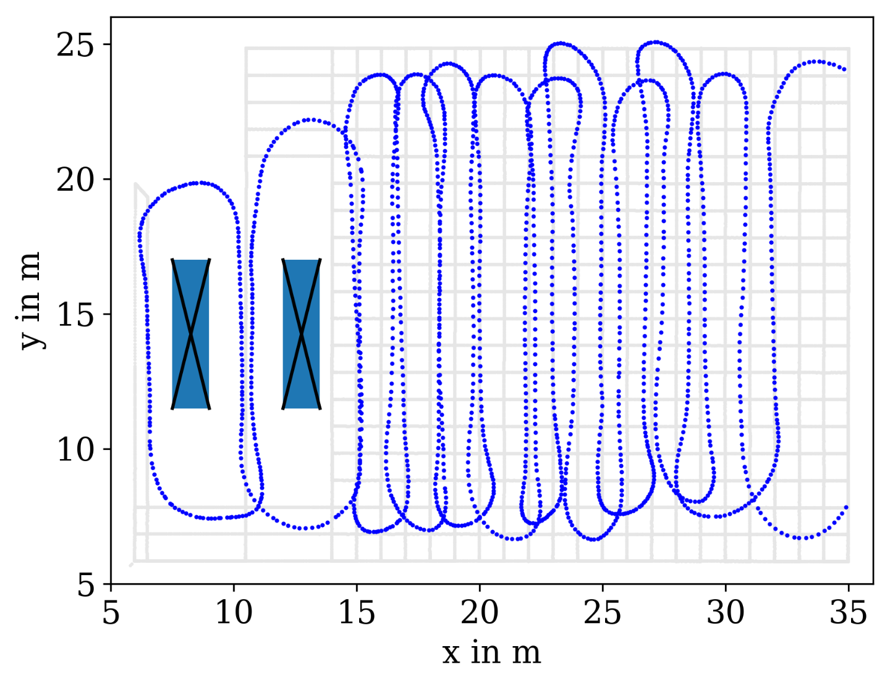

Warehouse Dataset

A visual indoor-positioning benchmark for machine-learning-based localization in an industrial warehouse.
Overview
The Warehouse Dataset supports the development and evaluation of machine-learning-based visual localization in industrial indoor environments. The dataset spans 1,320 m² and comprises 464,804 RGB images recorded at 640 × 480 pixels. Each image is labelled with a high-accuracy reference pose, including three-dimensional position and rotation.
The reference measurements were acquired using a Nikon iGPS optical reference system with submillimetre positional accuracy and less than one degree of angular error. The images were recorded with eight calibrated Logitech C270 cameras mounted to a 300 mm-diameter platform. Their relative offsets of only a few centimetres were removed by calibration.
Two warehouse trajectories were captured for training; eight additional trajectories probe specific evaluation criteria such as generalization, changing scale, motion artefacts and volatility.


Recorded trajectories and evaluation scenarios
The dataset contains two training trajectories and eight test trajectories. The diagrams below show their paths and highlight the evaluation scenarios.
Two separate training paths through the warehouse.

Testing performance in the shelving and storage-rack area.

Testing localization accuracy over shorter distances.

Testing across intersecting trajectories.

Testing robustness to motion-induced image degradation.

Testing changes in spatial or visual scale.

Testing outside the shelving area, in open warehouse space.

Testing over larger portions of the warehouse.

Testing under varying environmental or motion conditions.

Dataset structure and annotations
The complete dataset consists of training and testing archives. For every camera in each recording, a text file lists the path to each captured image, the corresponding camera and its reference position and orientation as a quaternion.
path/to/[image].jpg x_pos y_pos z_pos rot_w rot_p rot_q rot_r The camera-calibration archive provides calibration matrices for all eight cameras together with information describing how the matrices correspond to the individual cameras.
Download files
The training and testing scenarios are available as individual compressed archives. Camera calibration is available separately.
| Split / scenario | Images and file size | Download |
|---|---|---|
| Train · Horizontal | 98,343 images · 5.9 GB | Download ↗ |
| Train · Vertical | 101,092 images · 5.9 GB | Download ↗ |
| Test · Crossing | 12,375 images · 1.1 GB | Download ↗ |
| Test · Open space | 72,858 images · 4.4 GB | Download ↗ |
| Test · Racks | 54,915 images · 3.7 GB | Download ↗ |
| Test · Motion artifacts | 16,967 images · 1.3 GB | Download ↗ |
| Test · Large scale | 43,707 images · 1.0 GB | Download ↗ |
| Test · Small scale | 14,458 images · 2.7 GB | Download ↗ |
| Test · Scale transition | 50,303 images · 3.9 GB | Download ↗ |
| Test · Volatility | 17,158 images · 1.9 GB | Download ↗ |
| Camera calibration | Calibration matrices | Download ↗ |
License agreement
The data is provided exclusively for non-commercial use. For commercial use, please contact us. When publishing results obtained with this dataset, please cite the publication listed below.
Referencing
Please cite the following publication if you publish results based on the Warehouse Dataset: